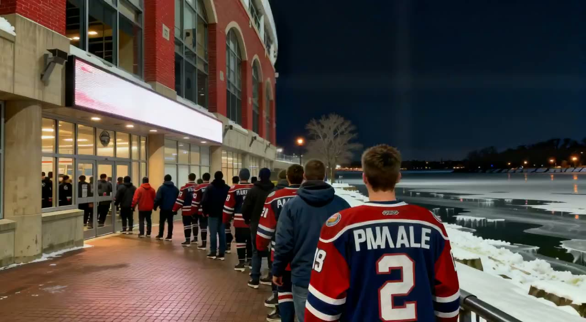

BUF take it in overtime, 4-3 over CAR
The night's pick of the fixtures, on tape: it went to overtime; 7 goals were scored.

 Carolina Hurricanes were at
Carolina Hurricanes were at  Buffalo Sabres on 2005-01-03, and it finished 4-3 in overtime. The reel below is the night as Home Ice Network saw it, from the doors of HSBC Arena to an empty bowl.
Buffalo Sabres on 2005-01-03, and it finished 4-3 in overtime. The reel below is the night as Home Ice Network saw it, from the doors of HSBC Arena to an empty bowl.
The record of it
| BUF | CAR | |
|---|---|---|
| Goals | 4 | 3 |
| Shots | 33 | 27 |
| Power-play goals | 1 | 1 |
| Penalty minutes | 0 | 0 |
Buffalo Sabres are 15-15-3, 43 points. Carolina Hurricanes are 15-8-9, 53 points.
The pictures are made, not filmed: this league is played inside a game, and no camera was there. Nobody in the reel is a particular player, and the desk names no scorer, because the record keeps none.